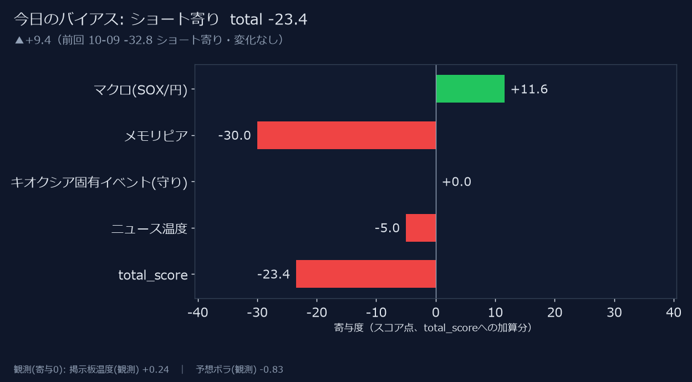
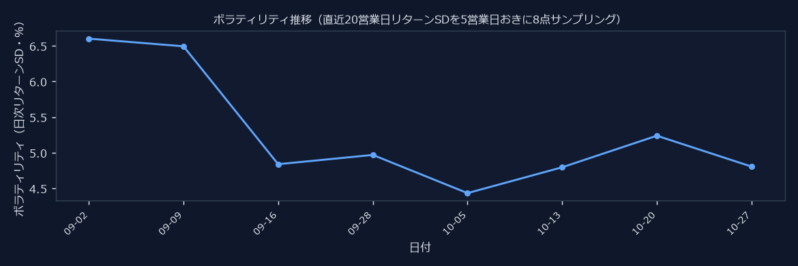
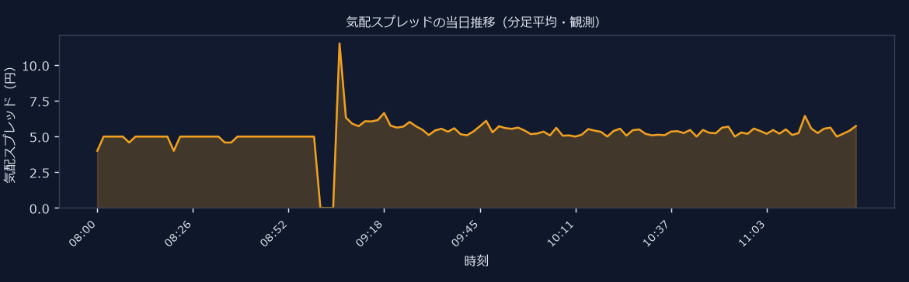
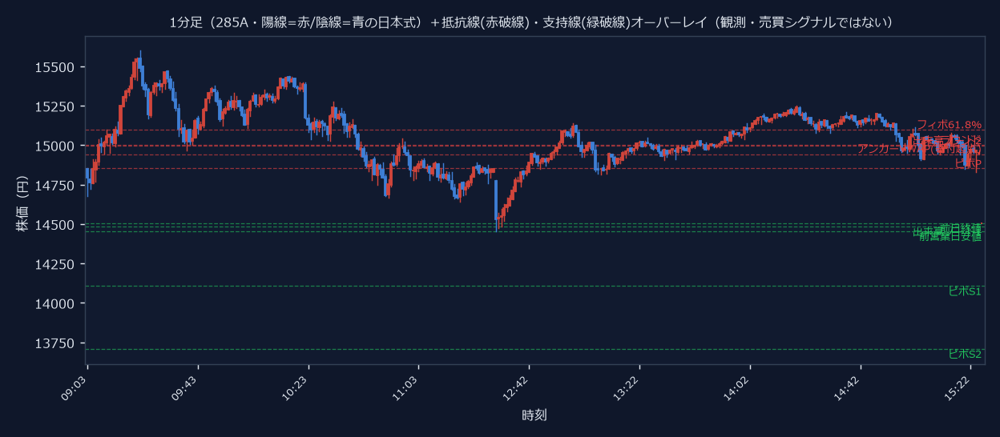
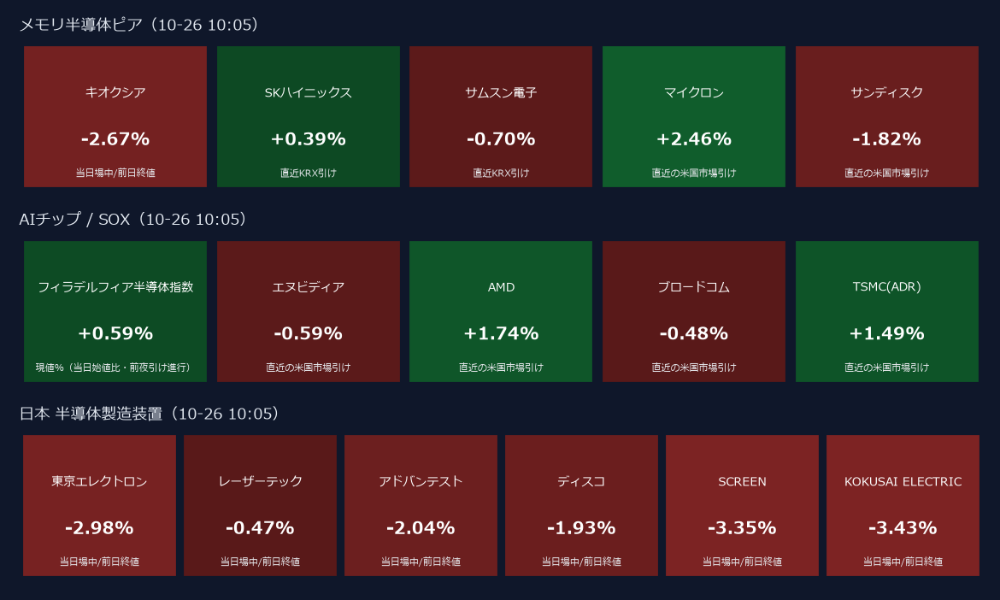
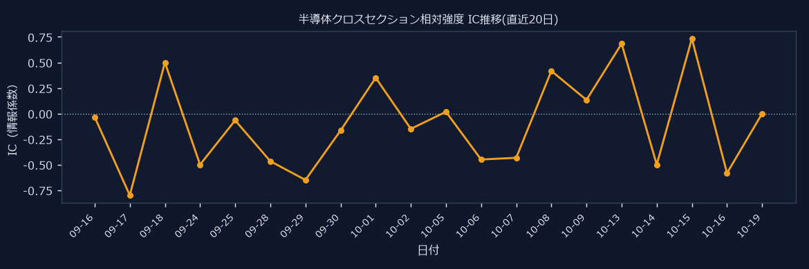
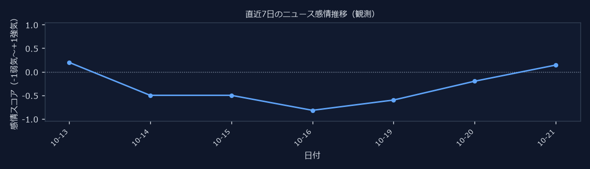
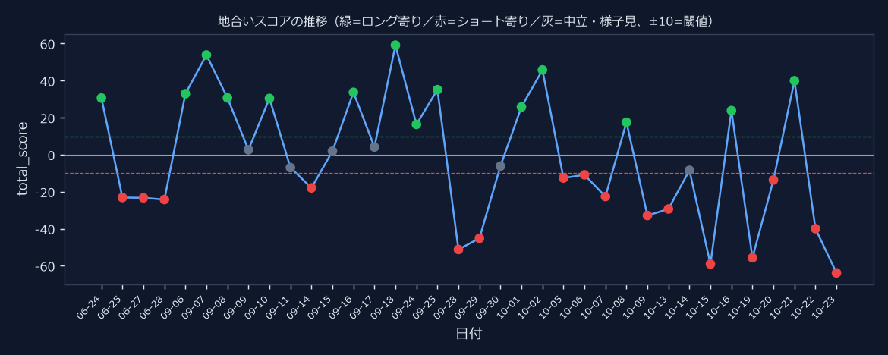

👀 累計閲覧数: 124
| 日 | バイアス | 地合い | 翌日 |
|---|---|---|---|
| 10/20 | ショート寄り | -13.7 | -1.75% |
| 10/21 | ロング寄り | +39.9 | -5.66% |
| 10/22 | ショート寄り | -40.0 | +6.34% |
| 10/23 | ショート寄り | -63.8 | +0.16% |
| 10/26 | ロング寄り | +17.2 | （未判明） |

| 軸 | subscore | weight | 寄与 |
|---|---|---|---|
| マクロ(SOX/円) | 0.4186 | 0.35 | +14.65 |
| メモリピア | -0.0842 | 0.3 | -2.53 |
| キオクシア固有イベント(守り) | 0.0 | 0.2 | +0.00 |
| ニュース温度 | 0.6667 | 0.15 | +10.00 |
| 掲示板温度(観測) | -0.1177 | 0.0 | +0.00 |
| 予想ボラ(観測) | -0.7759 | 0.0 | +0.00 |
| 項目 | 値% | weight | 寄与 | 時点/注記 |
|---|---|---|---|---|
| SOX指数（フィラデルフィア半導体） | +0.59% | 0.3 | +0.178 | 現値%（当日始値→直近値・前日終値比ではない） · 10-26 19:05 |
| マイクロン（MU） | +2.46% | 0.15 | +0.369 | 直近の米国引け · 10-26 19:05 |
| エヌビディア（NVDA） | -0.59% | 0.15 | -0.088 | 直近の米国引け · 10-26 19:05 |
| サンディスク（SNDK） | -1.82% | 0.15 | -0.272 | 直近の米国引け · 10-26 19:05 |
| ドル円（USD/JPY） | +0.54% | 0.15 | +0.081 | 夜間変化%（円安=+寄与） · 10-26 19:05 |
| 米10年金利（^TNX） | +0.71% | -0.1 | -0.071 | 10年金利(1/10正規化)前日比%・上昇=逆風 · 10-26 19:05 |
| 寄り前気配（中値） | 12,562.5 |
| 前日終値 | 12,755.0 |
| 気配ギャップ | -1.51% |
| 板優勢 | 拮抗 |
| 買い注文（板の厚み） | 725,300 |
| 売り注文（板の厚み） | 725,300 |
| 買い成行超過 | 1,590,900 |
| 売り成行超過 | 1,796,200 |
| 板優勢 | 拮抗 |
| 上値抵抗（価格が高い順） | |||
|---|---|---|---|
| ピボR1 | 13,250.0 | +5.58% | +0.81SD |
| 当日高値 | 13,035.0 | +3.86% | +0.56SD |
| 前日終値 | 12,755.0 | +1.63% | +0.24SD |
| アンカーVWAP(寄付起点) | 12,577.6 | +0.22% | +0.03SD |
| 出来高ノード2 | 12,569.4 | +0.15% | +0.02SD |
| 下値支持（価格が高い順） | |||
|---|---|---|---|
| 出来高ノード1 | 12,532.1 | -0.14% | -0.02SD |
| 出来高ノード3 | 12,494.9 | -0.44% | -0.06SD |
| ピボP | 12,315.0 | -1.87% | -0.27SD |
| 当日安値 | 12,290.0 | -2.07% | -0.30SD |
| ピボS1 | 11,820.0 | -5.82% | -0.84SD |

| 銘柄 | 約定率 | 約定まで(中央) |
|---|---|---|
| 285A | 85.7% | 2.7秒 |
| 6146 | 59.1% | 4.6秒 |
| 6920 | 72.7% | 2.3秒 |
| 8035 | 100.0% | 15.3秒 |
| 指標 | サイン | 値 |
|---|---|---|
| 25日vs75日線 | 🔴 | -1622.133 |
| 5日vs25日(GC/DC) | 🔴 | -3334.8 |
| ADX/DI方向 | 🔴 | 26.931 |
| CCI(20) | ⚪ | -90.467 |
| CMF(20) | 🔴 | -0.191 |
| MACDヒスト | 🔴 | -367.072 |
| MFI(14) | ⚪ | 27.344 |
| OBV傾き(5本) | 🔴 | -29863800.0 |
| RSI(14) | ⚪ | 31.03 |
| Williams%R | 🟢 | -85.067 |
| ストキャス | 🟢 | 10.731 |
| スーパートレンド | 🔴 | -1 |
| パラボリックSAR | 🔴 | 16653.899 |
| ボリンジャー%b | ⚪ | 0.175 |
| 一目雲位置 | 🔴 | 12550.0 |
| 価格vs25日線 | 🔴 | 12550.0 |
| スパン別スコア | 短期(5営業日足換算) | 中期(20営業日足換算) | 長期(60営業日足換算) |
|---|---|---|---|
| 合成スコア | 弱気(-4) | やや弱気(-3) | やや強気(+2) |
| 指標 | 短期(5営業日足換算) | 中期(20営業日足換算) | 長期(60営業日足換算) |
|---|---|---|---|
| 価格vs25日線 | 🔴 | — | — |
| 25日vs75日線 | — | — | — |
| 5日vs25日(GC/DC) | 🔴 | — | — |
| MACDヒスト | 🔴 | — | — |
| ADX/DI方向 | 🔴 | — | — |
| スーパートレンド | 🔴 | 🔴 | — |
| パラボリックSAR | 🔴 | 🔴 | 🟢 |
| 一目雲位置 | — | — | — |
| RSI(14) | ⚪ | — | — |
| ストキャス | 🟢 | — | — |
| CCI(20) | 🟢 | — | — |
| Williams%R | 🟢 | — | — |
| ボリンジャー%b | ⚪ | — | — |
| OBV傾き(5本) | 🔴 | 🔴 | 🟢 |
| CMF(20) | ⚪ | — | — |
| MFI(14) | ⚪ | — | — |


| 節目 | 価格 | 現在値比 |
|---|---|---|
| 本日始値 | 12,530.0 | -0.16% |
| 前日終値 | 12,755.0 | +1.63% |
| 本日安値 | 12,290.0 | -2.07% |
| 心理節目 13,000 | 13,000.0 | +3.59% |
| 本日高値 | 13,035.0 | +3.86% |
| 心理節目 12,000 | 12,000.0 | -4.38% |
| 心理節目 14,000 | 14,000.0 | +11.55% |
| 心理節目 11,000 | 11,000.0 | -12.35% |
| 心理節目 15,000 | 15,000.0 | +19.52% |
| 高値時刻 | 09:10 |
| 安値時刻 | 09:48 |
| 終値位置(0=安値引け・1=高値引け) | 0.35 |
| 日中値幅% | 5.95% |
| 寄りギャップ% | -1.76% |
| 型 | 日数 | 割合 |
|---|---|---|
| A（寄り天・終日下落） | 28 | 35.0% |
| B（寄り底・終日上昇） | 19 | 23.8% |
| C（寄り天だが戻す（往復）） | 10 | 12.5% |
| D（寄り底だが落とす（往復）） | 8 | 10.0% |
| E（終日レンジ（値幅小）） | 1 | 1.2% |
| F（日中で天底（後場転換型）） | 14 | 17.5% |
| 型 | 意味 |
|---|---|
| A（寄り天・終日下落） | 寄り30分で高値を付け、その後は戻せずに安値圏で引ける（終日下落）。 |
| B（寄り底・終日上昇） | 寄り30分で安値を付け、その後は下げずに高値圏で引ける（終日上昇）。 |
| C（寄り天だが戻す（往復）） | 寄り30分で高値を付けた後、下げきらずに上へ戻る（切り返す）＝往復型。 |
| D（寄り底だが落とす（往復）） | 寄り30分で安値を付けた後、上げきらずに下へ落ちる（切り返す）＝往復型。 |
| E（終日レンジ（値幅小）） | 高値・安値とも寄り30分より後だが、値幅自体が小さく方向感が乏しい。 |
| F（日中で天底（後場転換型）） | 高値・安値とも寄り30分より後で、値幅も小さくない＝日中で流れが転換した日。 |

| 銘柄 | 価格 | 騰落% | データ時点 |
|---|---|---|---|
| キオクシア 285A.T | 12,550.0 | -1.61% | 当日場中/前日終値 |
| SKハイニックス 000660.KS | 1,275,000.0 | -0.16% | 直近KRX引け |
| サムスン電子 005930.KS | 213,000.0 | -1.16% | 直近KRX引け |
| マイクロン MU | 877.5 | +2.46% | 直近の米国市場引け｜米国 10-23 引け |
| サンディスク SNDK | 1,238.0 | -1.82% | 直近の米国市場引け｜米国 10-23 引け |
| 銘柄 | 価格 | 騰落% | データ時点 |
|---|---|---|---|
| フィラデルフィア半導体指数 ^SOX | — | +0.59% | 現値%（当日始値比・前夜引け進行）｜米国 10-23 セッション・当日始値比 |
| エヌビディア NVDA | 211.0 | -0.59% | 直近の米国市場引け｜米国 10-23 引け |
| AMD AMD | 516.8 | +1.74% | 直近の米国市場引け｜米国 10-23 引け |
| ブロードコム AVGO | 321.7 | -0.48% | 直近の米国市場引け｜米国 10-23 引け |
| TSMC(ADR) TSM | 418.5 | +1.49% | 直近の米国市場引け｜米国 10-23 引け |
| 銘柄 | 価格 | 騰落% | データ時点 |
|---|---|---|---|
| 東京エレクトロン 8035.T | 9,110.0 | -3.68% | 当日場中/前日終値 |
| レーザーテック 6920.T | 37,580.0 | -1.21% | 当日場中/前日終値 |
| アドバンテスト 6857.T | 31,070.0 | -3.93% | 当日場中/前日終値 |
| ディスコ 6146.T | 48,410.0 | -1.79% | 当日場中/前日終値 |
| SCREEN 7735.T | 11,125.0 | -4.34% | 当日場中/前日終値 |
| KOKUSAI ELECTRIC 6525.T | 6,529.0 | -4.29% | 当日場中/前日終値 |
| AMD | — |
| AVGO | — |
| MU | — |
| NVDA | — |
| SNDK | — |
| TSM | — |
| D+1 | D+2 | |
|---|---|---|
| 285A | — | — |
| 4062 | — | — |
| 4063 | — | — |
| 6146 | — | — |
| 6526 | — | — |
| 6723 | — | — |
| 6857 | — | — |
| 6920 | — | — |
| 6963 | — | — |
| 7735 | — | — |
| 8035 | — | — |
| 銘柄 | 個人シェア | 個人ネット |
|---|---|---|
| 285A | 5.6% | -1.9% |
| 8035 | 39.9% | +21.6% |
| 6920 | 12.6% | -3.5% |
| 6857 | 5.0% | -8.9% |
| 6146 | 14.1% | +1.6% |
| 7735 | 41.4% | +0.8% |
| 6525 | 63.1% | -52.2% |

| 2026-10-30 | キオクシア 2027年3月期 第2四半期(7-9月期)決算発表(10-30 18:45・予定) 📈 決算 ⚡ボラ警戒 会社IRニュース(2026-09-30掲載)に「第2四半期 決算発表 10月30日 18:45(予定)」と記載(予定表記)。同日は東京エレクトロン決算・日銀会合の最終日と重なる。会社側2Q予想(7-9月期純利益1兆2,700億円・中間累計売上2兆3,900億円/営業利益1兆8,900億円)との対比、通期予想開示の有無、追加の株主還元の有無、NAND需給とBiCS設備投資コメントが焦点。 |
| 2026-10-27 | SKハイニックス 000660.KS ⚡ボラ警戒 2026 Q3決算(予定)。HBM/NAND市況コメントが焦点。要確認: 日付はInvesting.com/TipRanks掲載ベース(前年Q3は10-23)。確定はSK hynix Newsroomの決算カンファレンスコール案内で。 |
| 2026-10-29 | サムスン電子(2026 Q3 確報) 005930.KS ⚡ボラ警戒 要確認/概算: Q3確報は10月末見込み(Investing.com掲載10-29・Q2 2026確報は07-29)。メモリ部門(DS)の数値とNAND/HBMコメントが焦点。確定はSamsung IRで。 |
| 2026-10-29 | サンディスク SNDK ⚡ボラ警戒 FY2027 第1四半期決算を2026-10-29(木)に発表(会社プレスリリース 2026-09-29・コールは太平洋時間13:30)。NAND専業ピアでキオクシアと合弁(四日市・北上)を持つため、NAND価格・出荷ビット・投資計画がキオクシアに最も近い。同日前後にサムスン確報・SKハイニックス・東京エレクトロン(10-30)の決算が集中する。 |
| 2026-10-30 | 東京エレクトロン 8035.T 2027年3月期 第2四半期決算発表(予定)。期末配当・通期予想を2Q時に開示予定。NAND/DRAM向け装置受注コメントがメモリ設備投資サイクルの手掛かり。TEL IRカレンダーで確定(日程変更の可能性あり)。 |
| 2026-10-28 | FOMC(10月会合) 会合10/27-28。SEPなし。声明は日本時間10/29未明。federalreserve.govで確定。 |
| 2026-10-30 | 日銀 金融政策決定会合(10月会合・展望レポート回) 会合10/29-30。「経済・物価情勢の展望」(展望レポート)公表回(基本的見解は当日、背景説明を含む全文は翌営業日14時)。boj.or.jpで確定。 |
| 2026-11-06 | 米雇用統計(10月分) BLS発表 08:30 ET(日本時間11/6 22:30・冬時間)。bls.gov/schedule/2026で確定。 |
| 2026-11-10 | 米CPI(10月分) BLS発表 08:30 ET(日本時間11/10 22:30)。bls.gov/schedule/2026で確定。 |
| ドル円(USD/JPY) | 157.34円 （+0.54%） |
| 米10年金利(^TNX) | 4.99% （+3.5bp） |
| 次回FOMCまで | 2日（2026-10-28） |

| 🔴 | ＋ SKハイニックス、Solidigmの米国上場を棚上げ NAND増産リスク後退でMicronとSanDiskに追い風 - BigGo ファイナンス Google News(メモリ半導体) 10pt キオクシア:low [SanDisk][Micron][SKハイニックス][NAND] SKハイニックス、Solidigmの米国上場を棚上げ NAND増産リスク後退でMicronとSanDiskに追い風 BigGo ファイナンス |
| 🔴 | ＋ 【PSMC業績急拡大】メモリー高騰とAI需要で台湾ファウンドリーが躍進、2027年も大幅値上げへ｜Semiconductor Geek - note Google News(メモリ半導体) 9pt キオクシア:low [値上げ][業績][semiconductor][ファウンドリ] 【PSMC業績急拡大】メモリー高騰とAI需要で台湾ファウンドリーが躍進、2027年も大幅値上げへ｜Semiconductor Geek note |
| 🔴 | ・ Micronが4F² DRAMを見送り6F²を継続する理由｜3D DRAM・HBM5・High-NA EUVの次世代戦略｜Semiconductor Geek - note Google News(メモリ半導体) 9pt キオクシア:low [Micron][DRAM][HBM][EUV] Micronが4F² DRAMを見送り6F²を継続する理由｜3D DRAM・HBM5・High-NA EUVの次世代戦略｜Semiconductor Geek note |
| 🔴 | ・ Samsung reportedly overhauls DRAM, NAND R&D incentives to retain talent and accelerate next-gen memory chips - digitimes Google News(EN semiconductor) 8pt キオクシア:low [Samsung][NAND][DRAM][chip] Samsung reportedly overhauls DRAM, NAND R&D incentives to retain talent and accelerate next-gen memory chips digitimes |
| 🔴 | ・ キオクシア、高速NANDでDRAM代替 AI向け「CXLメモリー」出荷 - 日経クロステック Google News(メモリ半導体) 7pt キオクシア:high [キオクシア][NAND][DRAM][メモリ] キオクシア、高速NANDでDRAM代替 AI向け「CXLメモリー」出荷 日経クロステック |
| 🔴 | ・ サムスンとSKハイニックス、中国NAND工場を高度化 西安は286層、大連は240層以上へ - 財経新聞 Google News(メモリ半導体) 7pt キオクシア:low [SKハイニックス][サムスン][NAND][中国] サムスンとSKハイニックス、中国NAND工場を高度化 西安は286層、大連は240層以上へ 財経新聞 |
| 🔴 | ・ Memory Prices Soar; DRAM and NAND Flash to Account for 68% of Major CSP CapEx in 2027, Says TrendForce - TrendForce Google News(EN semiconductor) 7pt キオクシア:low [NAND][DRAM][capex][memory] Memory Prices Soar; DRAM and NAND Flash to Account for 68% of Major CSP CapEx in 2027, Says TrendForce TrendForce |
| 🔴 | ・ マイクロン、vHBMでDRAMをプロセッサ上に積層－放熱が最大の課題、量産は2028年 - BigGo ファイナンス Google News(メモリ半導体) 6pt キオクシア:low [マイクロン][DRAM][HBM] マイクロン、vHBMでDRAMをプロセッサ上に積層－放熱が最大の課題、量産は2028年 BigGo ファイナンス |
| 🔴 | ・ Micronの「4F²断念」宣言で揺れるDRAM三国志…Samsung・SK・CXMTは正面突破 - BigGo ファイナンス Google News(メモリ半導体) 6pt キオクシア:low [Micron][Samsung][DRAM] Micronの「4F²断念」宣言で揺れるDRAM三国志…Samsung・SK・CXMTは正面突破 BigGo ファイナンス |
| 🔴 | ＋ 「来年生産分のメモリ約8割が契約済み」サムスン電子に関する韓国KB証券の分析―2027年初頭のDRAM価格は2桁％上昇と予測 - Game*Spark Google News(メモリ半導体) 6pt キオクシア:low [サムスン][DRAM][韓国][メモリ] 「来年生産分のメモリ約8割が契約済み」サムスン電子に関する韓国KB証券の分析―2027年初頭のDRAM価格は2桁％上昇と予測 Game*Spark |
| 🔴 | ・ NANDスーパーサイクルが再編する勢力図：キオクシアが上位4社から転落、SanDiskの高利益率持続性に議論 - BigGo ファイナンス Google News(メモリ半導体) 6pt キオクシア:high [キオクシア][SanDisk][NAND] NANDスーパーサイクルが再編する勢力図：キオクシアが上位4社から転落、SanDiskの高利益率持続性に議論 BigGo ファイナンス |
| 🔴 | ・ DRAMとNANDの「二刀流」目指す？ 中国2大メモリメーカーの思惑とは：大原雄介のエレ・組み込みプレイバック（1/3 ページ） - ITmedia Google News(メモリ半導体) 6pt キオクシア:low [NAND][DRAM][中国][メモリ] DRAMとNANDの「二刀流」目指す？ 中国2大メモリメーカーの思惑とは：大原雄介のエレ・組み込みプレイバック（1/3 ページ） ITmedia |
| 🔴 | ・ 信越化学工業、東京エレクトロン…エヌビディア、サムスンが熱視線を送る日本企業の基盤技術 - JBpress Google News(製造装置) 6pt キオクシア:low [サムスン][エヌビディア][東京エレクトロン] 信越化学工業、東京エレクトロン…エヌビディア、サムスンが熱視線を送る日本企業の基盤技術 JBpress |
| 🔴 | ・ EXCLUSIVE: Samsung, SK Hynix upgrading China plants to make more advanced chips, people say - Reuters Google News(EN semiconductor) 6pt キオクシア:low [SK Hynix][Samsung][chip][China] EXCLUSIVE: Samsung, SK Hynix upgrading China plants to make more advanced chips, people say Reuters |
| 🔴 | ・ Kioxia All Set to Raise the NAND Game in AI SSDs - EE Times Google News(EN semiconductor) 6pt キオクシア:high [Kioxia][NAND][SSD] Kioxia All Set to Raise the NAND Game in AI SSDs EE Times |
| 🟡 | ・ 韓国SKハイニックス、キオクシア売却益16兆ウォン（約1.9兆円）の特別配当説を否定…28日に株主還元の全容判明へ - BigGo ファイナンス Google News(キオクシア) 5pt キオクシア:high [キオクシア][SKハイニックス][韓国] 韓国SKハイニックス、キオクシア売却益16兆ウォン（約1.9兆円）の特別配当説を否定…28日に株主還元の全容判明へ BigGo ファイナンス |
| 🟡 | ・ TSMCのBeyond 2nm技術／キオクシアのAIインフラ向けフラッシュメモリ：電子ブックレット（組み込み開発） - MONOist Google News(キオクシア) 5pt キオクシア:high [キオクシア][TSMC][メモリ] TSMCのBeyond 2nm技術／キオクシアのAIインフラ向けフラッシュメモリ：電子ブックレット（組み込み開発） MONOist |
| 🟡 | ・ 日経平均は戻り試す､円は弱含む展開 キオクシアなど半導体関連決算 - 日本経済新聞 Google News(キオクシア) 5pt キオクシア:high [キオクシア][決算][半導体] 日経平均は戻り試す､円は弱含む展開 キオクシアなど半導体関連決算 日本経済新聞 |
| 🟡 | － 後場の日経平均は491円安でスタート、キオクシアHDやディスコなどが下落 執筆 - Investing.com - FX | 株式市場 | ファイナンス | 金融ニュース Google News(キオクシア) 5pt キオクシア:high [キオクシア][ディスコ][円安] 後場の日経平均は491円安でスタート、キオクシアHDやディスコなどが下落 執筆 Investing.com - FX | 株式市場 | ファイナンス | 金融ニュース |
| 🟡 | ・ Kioxia outlines plan to capture AI demand with its new high-speed memory chip - Nikkei Asia Google News(EN semiconductor) 5pt キオクシア:high [Kioxia][chip][memory][AI demand] Kioxia outlines plan to capture AI demand with its new high-speed memory chip Nikkei Asia |

| 日付 | バイアス | total | 285A実績損益 |
|---|---|---|---|
| 2026-10-26 | ロング寄り | +17.2 | — |
| 2026-10-23 | ショート寄り | -63.8 | — |
| 2026-10-22 | ショート寄り | -40.0 | — |
| 2026-10-21 | ロング寄り | +39.9 | — |
| 2026-10-20 | ショート寄り | -13.7 | — |
| 2026-10-19 | ショート寄り | -55.6 | — |
| 2026-10-16 | ロング寄り | +23.8 | — |
| 2026-10-15 | ショート寄り | -59.1 | — |
| 2026-10-14 | 中立 | -8.4 | — |
| 2026-10-13 | ショート寄り | -29.3 | — |
| 2026-10-09 | ショート寄り | -32.8 | — |
| 2026-10-08 | ロング寄り | +17.5 | — |
| 2026-10-07 | ショート寄り | -22.6 | — |
| 2026-10-06 | ショート寄り | -10.9 | — |
| 2026-10-05 | ショート寄り | -12.6 | — |
| 2026-10-02 | ロング寄り | +45.8 | — |
| 2026-10-01 | ロング寄り | +25.8 | — |
| 2026-09-30 | 中立 | -6.2 | — |
| 2026-09-29 | ショート寄り | -45.1 | — |
| 2026-09-28 | ショート寄り | -51.2 | — |
| 2026-09-25 | ロング寄り | +35.1 | — |
| 2026-09-24 | ロング寄り | +16.4 | — |
| 2026-09-18 | ロング寄り | +59.1 | — |
| 2026-09-17 | 中立 | +4.1 | — |
| 2026-09-16 | ロング寄り | +33.7 | — |
| 2026-09-15 | 中立 | +1.9 | — |
| 2026-09-14 | ショート寄り | -17.9 | — |
| 2026-09-11 | 中立 | -7.0 | — |
| 2026-09-10 | ロング寄り | +30.4 | — |
| 2026-09-09 | 中立 | +2.6 | — |
| 日付 | 予測 | 予測ギャップ | 実績ギャップ | 判定 |
|---|---|---|---|---|
| 2026-10-13 | down | -1.78% | -8.60% | ○的中 |
| 2026-10-14 | up | +0.30% | +2.11% | ○的中 |
| 2026-10-15 | down | -2.62% | -6.19% | ○的中 |
| 2026-10-16 | up | +1.02% | +1.59% | ○的中 |
| 2026-10-19 | down | -2.67% | -4.37% | ○的中 |
| 2026-10-20 | up | +1.06% | +0.51% | ○的中 |
| 2026-10-21 | up | +0.18% | +4.64% | ○的中 |
| 2026-10-22 | up | +0.78% | -1.18% | ×不的中 |
| 2026-10-23 | down | -3.59% | -4.76% | ○的中 |
| 2026-10-26 | flat | +0.15% | -1.76% | ×不的中 |
| バイアス | 件数 | 平均リターン |
|---|---|---|
| ショート寄り | 13 | -0.67% |
| ロング寄り | 13 | -0.85% |
| 中立 | 6 | +1.00% |
| 日付 | 信用買残 | 信用売残 | 倍率 |
|---|---|---|---|
| 2026-10-23 | 48,234,500 | 1,614,800 | 29.9倍 |
| 2026-10-22 | 48,241,600 | 1,626,000 | 29.7倍 |
| 2026-10-21 | 46,850,100 | 1,851,700 | 25.3倍 |
| 2026-10-20 | 31,171,800 | 1,133,500 | 27.5倍 |
| 2026-10-19 | 46,825,200 | 1,869,900 | 25.0倍 |
| 2026-10-16 | 47,831,100 | 1,536,300 | 31.1倍 |
| 2026-10-15 | 48,805,000 | 1,283,100 | 38.0倍 |
| 2026-10-14 | 49,686,400 | 1,400,800 | 35.5倍 |
| 2026-10-13 | 49,502,600 | 913,900 | 54.2倍 |
| 2026-10-09 | 44,798,300 | 1,503,400 | 29.8倍 |
| 銘柄 | 基準日 | 信用買残 | 信用売残 | 倍率 | 直近5営業日の倍率(新しい順) |
|---|---|---|---|---|---|
| キオクシア（285A） | 2026-10-23 | 48,234,500 | 1,614,800 | 29.87倍 | 10-23 29.87 ／ 10-22 29.67 ／ 10-21 25.30 ／ 10-20 27.50 ／ 10-19 25.04 |
| ディスコ（6146） | 2026-10-23 | 1,023,400 | 98,600 | 10.38倍 | 10-23 10.38 ／ 10-22 9.59 ／ 10-21 9.70 ／ 10-20 14.90 ／ 10-19 10.45 |
| KOKUSAI ELECTRIC（6525） | 2026-10-23 | 2,662,600 | 290,000 | 9.18倍 | 10-23 9.18 ／ 10-22 9.88 ／ 10-21 10.45 ／ 10-20 9.60 ／ 10-19 9.85 |
| アドバンテスト（6857） | 2026-10-23 | 3,497,900 | 1,404,600 | 2.49倍 | 10-23 2.49 ／ 10-22 2.28 ／ 10-21 2.12 ／ 10-20 6.19 ／ 10-19 2.11 |
| レーザーテック（6920） | 2026-10-23 | 1,394,600 | 289,700 | 4.81倍 | 10-23 4.81 ／ 10-22 5.37 ／ 10-21 4.39 ／ 10-20 5.45 ／ 10-19 4.42 |
| SCREEN（7735） | 2026-10-23 | 993,200 | 139,800 | 7.10倍 | 10-23 7.10 ／ 10-22 8.25 ／ 10-21 7.33 ／ 10-20 7.24 ／ 10-19 7.09 |
| 東京エレクトロン（8035） | 2026-10-23 | 11,817,600 | 498,300 | 23.72倍 | 10-23 23.72 ／ 10-22 24.47 ／ 10-21 24.04 ／ 10-20 19.08 ／ 10-19 24.39 |
| 銘柄 | TSE大引け | PTS | 米国ADR |
|---|---|---|---|
| キオクシア（285A） | 12,550.0円（10/26 15:30） | 12,740.0円（+1.51%・10/26 18:59） | — |
| ディスコ（6146） | 48,410.0円（10/26 15:30） | 48,200.0円（-0.43%・10/26 17:02） | — |
| アドバンテスト（6857） | 31,070.0円（10/26 15:30） | 31,660.0円（+1.90%・10/26 19:00） | — |
| レーザーテック（6920） | 37,580.0円（10/26 15:30） | 37,950.0円（+0.98%・10/26 18:51） | — |
| 東京エレクトロン（8035） | 9,110.0円（10/26 15:30） | 9,255.0円（+1.59%・10/26 18:53） | — |
| メモリ | キオクシア 四日市工場 | キオクシア(285A)/サンディスク主力NAND拠点。世界最大級のNAND生産。BiCS FLASH量産の中核 |
| メモリ | キオクシア 北上工場 | キオクシアの新世代NAND(BiCS第8世代)増強拠点。岩手県北上市 |
| メモリ | SKハイニックス 利川 | SKハイニックスの主力DRAM/HBM拠点。AI向けHBMで世界首位級 |
| メモリ | サムスン 華城(ファソン) | サムスン電子のメモリ/ファウンドリ拠点。DRAM・NAND・ロジック |
| メモリ | サムスン 平沢(ピョンテク) | サムスン最大級メモリ拠点。先端DRAM/NAND/HBM増強 |
| メモリ | マイクロン 広島工場 | マイクロンの先端DRAM拠点(日本)。EUV導入のDRAM量産 |
| メモリ | マイクロン 本社/ボイシ | マイクロン(MU)本社・米国DRAM拠点。NAND/DRAMピア |
| ファウンドリ | TSMC 新竹 | TSMC本拠・先端ロジックの中核。AIチップ(NVIDIA/AMD)を受託製造 |
| ファウンドリ | TSMC 熊本(JASM) | TSMCの日本ファウンドリ(JASM)。ソニー/デンソー連携。第2工場計画 |
| ファウンドリ | TSMC アリゾナ | TSMC米国拠点。先端ノードの域内供給 |
| ファウンドリ | インテル ファウンドリ | インテルのファウンドリ事業。先端ロジック内製/受託 |
| equipment | ASML フェルトホーフェン | EUV露光装置の独占供給(オランダ)。先端半導体製造の死活的ボトルネック |
| equipment | 東京エレクトロン(8035) | 成膜/エッチング等の製造装置大手(日本)。SPEヒートマップの中核銘柄 |
| equipment | アプライド・マテリアルズ | 米製造装置最大手。WFE市況のバロメーター |
| equipment | レーザーテック(6920) | EUVマスク検査で独占的(日本)。SPE銘柄 |
| equipment | アドバンテスト(6857) | 半導体テスタ大手(日本)。AI/HBMテスト需要で注目。SPE銘柄 |
| データセンター | NVIDIA 本社 | AI GPU設計の中核(米サンタクララ)。AIチップ需要の震源 |
| チョークポイント | 台湾海峡 | 先端半導体供給の地政学的要衝。封鎖/緊張は全AI半導体に波及するチョークポイント |
| チョークポイント | マラッカ海峡 | 東アジア半導体サプライチェーンの海上物流要衝 |
| geopolitics | 米中 半導体規制(対中輸出規制) | 対中先端半導体/装置の輸出規制。需給・各社売上の地政学リスク軸 |